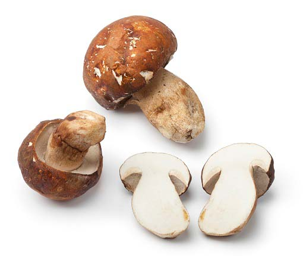
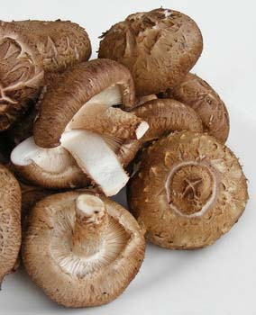

Home
FAQs
Contact
World Fungi Day!
Types of Fungi
Edible
Toxic
Too Cool to Be True
Chanterelle Mushrooms
Orange, yellow or white, meaty and funnel-shaped. On the lower surface, underneath the smooth cap, most species have rounded, forked folds that run almost all the way down the stipe, which tapers down seamlessly from the cap. They emit a fruity aroma, and often have a mildly peppery taste.
Common in Europe, North America, and Africa. They tend to grow in clusters in mossy coniferous forests, but are also often found in mountainous birch forests, and among grasses and low-growing herbs.
If you cook with Chanterelle mushrooms, you should use them in a dry sauté because they have such a high water content that they will soon be cooking in the water anyway. They smell and taste a little fruity and peppery, and they are perfect as a topping for entrees.
View in the Wild
×
Hedgehog Mushrooms
Pale pink or salmon to a cream color, to yellow or even dark orange. Their caps are irregularly shaped with flat, somewhat concave tops. The spiky, hedgehog-like “spines” on the underside of the cap are detachable and will come off if you rub your fingers along them.
Found nestling in grass and moss beneath spruce, pine, birch and beech trees. They grow in rings or arcs around host trees in most types of mixed woodland.
Also known as the Sweet Tooth mushroom, this mushroom smells and tastes sweet, unless it is an older mushroom, in which case it may taste a little bitter. It also has a meaty, nutty, and crunchy taste.
View in the Wild
×
Black Truffle Mushrooms
Dark/black mushrooms with bumpy outer skin, and an aromatic scent.
Found in the mountains of Southern Europe.
The black truffle is the most expensive (up to $1,500 per pound) of all truffles, and also one of the most famous. These truffles have many different names due to their color. They are a fairly rare occurrence. It is thought that they have been growing since the Triassic Period, over 250 million years ago.
View in the Wild
×
Black Trumpet Mushrooms
Dark/black, tender and somewhat fragile funnel or horn-shaped mushroom.
Found most often growing as large clusters in damp deciduous forests of the East and Midwest late in the summer, and all winter long in the West.
Also known as the Horn of Plenty mushroom or the Trumpet of the Dead mushroom, they have a smoky, rich flavor and when dried, they are similar to the Black Truffle mushroom.
View in the Wild
×

Porcini Mushrooms
Red-brown to dark brown caps that are smooth, slightly sticky (and are convex when young, flattening out with age). Very thick and dense, cream-colored stem with small ridges on the bottom portion. Underneath the cap, there are many ivory, spongy tubes which release green-brown spores to propagate.
Found in grasslands of Europe and North America.
Porcini mushrooms are very meaty and flavorful, and they are often found in numerous Italian dishes. Much like sourdough, Porcini mushrooms have a flavor and taste that is creamy and nutty. The flesh is white and solid when sliced and emits a yeasty aroma reminiscent of sourdough.
View in the Wild
×

Shiitake Mushrooms
Brown, convex (umbrella-like) caps, with off-white gills and tan stems.
Found mostly in areas such as Korea, China, and Japan.
Very commonly found in a variety of Asian dishes. Like Portobello mushrooms, Shiitake mushrooms are chewy and meaty.
View in the Wild
×
Portobello Mushrooms
Brown with a large, flat cap and dark brown gills.
Found in grasslands of Europe and North America.
When white button mushrooms fully mature, their caps grow outwards and they are called Portobello mushrooms. With its mild flavor and somewhat meaty texture, you can even use these types of mushrooms as a substitute for meat in many dishes. Some people consider them one of the tastiest mushrooms in existence.
View in the Wild
×
Beech Mushroom
White stemmed mushrooms with brown caps.
Found growing on Beech trees.
Beech mushrooms, also called Clamshell mushrooms. These mushrooms have caps that are brown and a crunchy, but sweet and nutty flavor. However, this only applies when they are cooked, which is the best way to eat them. If they are eaten raw, you will notice a bitter taste that you're not likely to be fond of.
View in the Wild
×